<!doctype html>
<html lang="en" data-theme="__THEME__">
<meta charset="utf-8">
<meta name="viewport" content="width=device-width,initial-scale=1">
<title>Empire Bar Menu</title>
<style>
/* Empire's licensed brand fonts: Lemon Milk (display) and Linotype Spitz (text). */
@font-face{font-family:"Lemon Milk";src:url(fonts/LEMONMILK-Light.otf) format("opentype");font-weight:300;font-display:block}
@font-face{font-family:"Lemon Milk";src:url(fonts/LEMONMILK-Regular.otf) format("opentype");font-weight:400;font-display:block}
@font-face{font-family:"Lemon Milk";src:url(fonts/LEMONMILK-Medium.otf) format("opentype");font-weight:500;font-display:block}
@font-face{font-family:"Linotype Spitz";src:url(fonts/spitz-light.ttf) format("truetype");font-weight:300;font-display:block}
@font-face{font-family:"Linotype Spitz";src:url(fonts/spitz-book.ttf) format("truetype");font-weight:400;font-display:block}
@font-face{font-family:"Linotype Spitz";src:url(fonts/spitz-bold.ttf) format("truetype");font-weight:700;font-display:block}

/* A 16:9 bar TV. --u is 1% of screen height (capped by width), so it reads the same from 720p to 4K.
   --k scales the type and --g the space between rows; fit() sets both so the menu fills the screen
   with the largest type that still keeps every drink on one line.
   The look is quiet luxury: ivory type on warm black, gold used sparingly, hairlines and space instead of boxes. */
:root{
  --bg:#0c0b09; --ink:#f3ecdf; --gold:#f2b000; --gold-hi:#ffd36b; --gold-lo:#a37a17;
  --mute:rgba(243,236,223,.58); --faint:rgba(243,236,223,.32); --hair:rgba(242,176,0,.2);
  --display:"Lemon Milk",Georgia,serif;
  --body:"Linotype Spitz","Helvetica Neue",Arial,sans-serif;
  --u:min(1vh,.5625vw);
  --k:1; --g:1;
  --s:calc(var(--u)*var(--k));
  --v:calc(var(--s)*var(--g));
}
/* /rose: the same menu with a rosé accent instead of gold. */
:root[data-theme="rose"]{--gold:#f2a7bd;--gold-hi:#ffc9d8;--gold-lo:#b06a80;--hair:rgba(242,167,189,.22)}
*,*::before,*::after{box-sizing:border-box}
html,body{height:100%;margin:0}
body{background:var(--bg);color:var(--ink);font-family:var(--body);overflow:hidden;cursor:none;
  -webkit-font-smoothing:antialiased;text-rendering:optimizeLegibility}
/* Warm light from above, a soft vignette, and a fine grain so the black reads like velvet, not a screen. */
body::before{content:"";position:fixed;inset:0;pointer-events:none;
  background:radial-gradient(ellipse 55% 38% at 50% 0%,rgba(242,176,0,.085),transparent 72%),
             radial-gradient(ellipse 120% 95% at 50% 50%,transparent 58%,rgba(0,0,0,.6))}
body::after{content:"";position:fixed;inset:0;pointer-events:none;opacity:.06;mix-blend-mode:overlay;
  background-image:url("data:image/svg+xml,%3Csvg xmlns='http://www.w3.org/2000/svg' width='220' height='220'%3E%3Cfilter id='n'%3E%3CfeTurbulence type='fractalNoise' baseFrequency='.9' numOctaves='2' stitchTiles='stitch'/%3E%3C/filter%3E%3Crect width='100%25' height='100%25' filter='url(%23n)'/%3E%3C/svg%3E")}

/* A boiserie frame, like the panelled walls of a French palace: an outer fillet, an inner rule with
   concave corners, rococo scrolls and a small rosette in each corner, and a crest at top and bottom center.
   Drawn by frame() at the screen's exact pixel size so the hairlines stay crisp. */
.frame{position:fixed;inset:0;pointer-events:none}
.frame svg{display:block;width:100%;height:100%;fill:none;stroke:var(--gold);stroke-linecap:round;stroke-linejoin:round}
.frame .outer{opacity:.3}
.frame .inner{opacity:.42}
.frame .orn{opacity:.62}
.frame .bead{fill:var(--gold);stroke:none}
.frame .pearl{fill:var(--gold);stroke:none;opacity:.32}
.frame .fillet{opacity:.16}
.frame .faint{opacity:.5}

.screen{position:relative;z-index:1;height:100%;display:grid;grid-template-rows:1fr auto;gap:calc(var(--u)*3);
  padding:calc(var(--u)*10) calc(var(--u)*8.6) calc(var(--u)*5.2)}

/* Three columns separated by faded hairlines; the middle one ends in the Champagne card. */
.menu{display:grid;grid-template-columns:repeat(3,minmax(0,1fr));min-height:0;overflow:hidden}
.col{position:relative;display:flex;flex-direction:column;gap:calc(var(--v)*2.8);min-width:0;padding:0 calc(var(--u)*1.9)}
.col:first-child{padding-left:0}
.col:last-child{padding-right:0}
.col+.col::before{content:"";position:absolute;left:0;top:2%;bottom:2%;width:1px;
  background:linear-gradient(transparent,rgba(242,176,0,.16) 20%,rgba(242,176,0,.16) 80%,transparent)}

.sec h2{display:flex;align-items:baseline;gap:calc(var(--u)*1.6);margin:0 0 calc(var(--v)*1.2);padding-bottom:calc(var(--s)*1);
  border-bottom:1px solid var(--hair);font-family:var(--display);font-weight:400;font-size:calc(var(--s)*2.25);line-height:1;
  letter-spacing:.34em;color:var(--gold)}
.sec h2 small{margin-left:auto;font-family:var(--body);font-weight:400;font-size:calc(var(--s)*1.95);letter-spacing:.04em;color:var(--mute);white-space:nowrap}

/* Every drink is one line, all the same height: name, origin flag (wines), size, price, then a star for best sellers.
   Price sits right after the name (no column of numbers to compare). Gold is kept for headings and prices only. */
.items{list-style:none;margin:0;padding:0;display:grid;gap:calc(var(--v)*.85)}
.items li{display:flex;align-items:center;gap:calc(var(--s)*.85);min-width:0;height:calc(var(--s)*3.5)}
.name{font-size:calc(var(--s)*3.1);line-height:1;letter-spacing:-.005em;white-space:nowrap;overflow:hidden;text-overflow:ellipsis;min-width:0}
.size{flex:none;font-family:var(--display);font-weight:300;font-size:calc(var(--s)*1.45);letter-spacing:.08em;color:var(--mute)}
.price{flex:none;font-family:var(--display);font-weight:400;font-size:calc(var(--s)*2.3);letter-spacing:.04em;color:var(--gold);font-variant-numeric:lining-nums}
.price i{font-style:normal;color:var(--faint);margin:0 .2em}
.flag{flex:none;width:calc(var(--s)*2.2);height:calc(var(--s)*1.47);border-radius:calc(var(--s)*.22);overflow:hidden;
  box-shadow:0 0 0 1px rgba(243,236,223,.18);filter:saturate(.82) brightness(.96)}
.flag svg{display:block;width:100%;height:100%}
/* A best seller gets a small gold star after its price. */
.tag{flex:none;font-size:calc(var(--s)*1.9);line-height:1;color:var(--gold-hi)}
.note{margin:calc(var(--v)*1.4) 0 0;font-weight:400;font-size:calc(var(--s)*1.9);color:var(--mute);letter-spacing:.01em}

/* The Champagne card: one hairline, generous space, a very slow sheen. */
.toast{position:relative;overflow:hidden;margin-top:auto;padding:calc(var(--s)*1.5) calc(var(--s)*3) calc(var(--s)*1.6);text-align:center;
  border:1px solid rgba(242,176,0,.42);background:linear-gradient(180deg,rgba(242,176,0,.05),transparent 70%)}
.toast::after{content:"";position:absolute;inset:-50% -30%;pointer-events:none;
  background:linear-gradient(105deg,transparent 44%,rgba(255,224,150,.09) 50%,transparent 56%);
  transform:translateX(-70%);animation:sheen 12s ease-in-out infinite}
@keyframes sheen{0%,60%{transform:translateX(-70%)}100%{transform:translateX(70%)}}
.toast .kick{display:inline-flex;align-items:center;gap:calc(var(--u)*1.1);font-family:var(--display);font-weight:400;font-size:calc(var(--s)*1.3);
  letter-spacing:.34em;text-transform:uppercase;color:var(--mute)}
.toast h3{margin:calc(var(--s)*.8) 0 calc(var(--s)*.4);font-family:var(--display);font-weight:300;font-size:calc(var(--s)*2.9);line-height:1;
  letter-spacing:.2em;color:var(--ink)}
.toast .sub{font-weight:300;font-size:calc(var(--s)*1.7);color:var(--mute);letter-spacing:.02em}
.pours{display:grid;grid-template-columns:1fr auto 1fr;align-items:center;margin-top:calc(var(--s)*1.2)}
.pours .sz{font-family:var(--display);font-weight:300;font-size:calc(var(--s)*1.25);letter-spacing:.26em;color:var(--mute);text-transform:uppercase}
.pours .pr{margin-top:calc(var(--s)*.5);font-family:var(--display);font-weight:300;font-size:calc(var(--s)*2.6);line-height:1;color:var(--gold);letter-spacing:.06em}
.pours .dv{width:1px;height:calc(var(--s)*3.8);background:var(--hair)}

/* Sign-off strip: the official logo (one color, exactly as supplied) centered between hairlines,
   the Instagram handle on the left and the member perk on the right. */
footer{display:grid;grid-template-columns:1fr auto 1fr;align-items:center;gap:calc(var(--u)*3.5);
  font-family:var(--display);font-weight:300;font-size:calc(var(--u)*1.6);letter-spacing:.28em;text-transform:uppercase;color:var(--mute)}
footer b{font-weight:400;color:var(--gold)}
footer .ig{text-transform:none;letter-spacing:.14em}
footer .key i{font-style:normal;color:var(--gold-hi);font-family:var(--body);font-size:1.3em;margin-right:.35em}
.logo{height:calc(var(--u)*11.5);width:auto;display:block;flex:none}
.rule{flex:1;height:1px;background:linear-gradient(90deg,rgba(242,176,0,.08),var(--hair))}
.rule.r{background:linear-gradient(270deg,rgba(242,176,0,.08),var(--hair))}
footer .side{display:flex;align-items:center;gap:calc(var(--u)*3.5);min-width:0}
footer span{flex:none;white-space:nowrap}
</style>

<div class="frame" id="frame" aria-hidden="true"></div>

<main class="screen">
  <section class="menu" id="menu"></section>
  <footer>
    <div class="side"><span class="ig">@empirescottsdale</span><span class="key"><i>★</i>Best seller</span><div class="rule"></div></div>
    
    <div class="side"><div class="rule r"></div><span>Members enjoy <b>25% off</b> all alcohol</span></div>
  </footer>
</main>

<script>
/* The menu, built by server.js from the Square catalog: three columns of sections.
   Each item is [country, name, price, size?, tag?]; a tag marks a best seller with a star; country is an ISO code for a wine's origin flag.
   "a / b" prices are glass / bottle. A `toast` section renders as the Champagne card. */
const MENU = __MENU__;

/* Small, simplified flags (3:2), drawn inline so they look identical on any TV browser. */
const FLAGS = {
  it:`<rect width="30" height="20" fill="#fff"/><rect width="10" height="20" fill="#009246"/><rect x="20" width="10" height="20" fill="#ce2b37"/>`,
  fr:`<rect width="30" height="20" fill="#fff"/><rect width="10" height="20" fill="#002395"/><rect x="20" width="10" height="20" fill="#ed2939"/>`,
  us:`<rect width="30" height="20" fill="#fff"/>${[0,2,4,6,8,10,12].map(i => `<rect y="${i*20/13}" width="30" height="${20/13}" fill="#b22234"/>`).join("")}
      <rect width="13" height="${7*20/13}" fill="#3c3b6e"/>${[[2.2,2],[5.4,2],[8.6,2],[3.8,4.4],[7,4.4],[10.2,4.4],[2.2,6.8],[5.4,6.8],[8.6,6.8]].map(([x,y]) => `<circle cx="${x}" cy="${y}" r=".75" fill="#fff"/>`).join("")}`,
};
const NAMES = {it:"Italy", fr:"France", us:"United States"};
const flag = cc => cc && FLAGS[cc] ? `<span class="flag" title="${NAMES[cc]}"><svg viewBox="0 0 30 20" preserveAspectRatio="none">${FLAGS[cc]}</svg></span>` : "";

const esc = s => String(s).replace(/[&<>"]/g, c => ({"&":"&amp;","<":"&lt;",">":"&gt;",'"':"&quot;"}[c]));
const price = p => String(p).split("/").map(s => esc(s.trim())).join("<i>/</i>");
const head = s => `<h2>${esc(s.title)}${s.legend ? `<small>${esc(s.legend)}</small>` : ""}</h2>`;
const tag = t => t ? `<span class="tag" title="${esc(t)}">\u2605</span>` : "";
const item = ([cc, n, p, sz, t]) => `<li><span class="name">${esc(n)}</span>${flag(cc)}${sz ? `<span class="size">${esc(sz)}</span>` : ""}<span class="price">${price(p)}</span>${tag(t)}</li>`;
const toast = s => `<div class="toast"><span class="kick">${flag(s.flag)}${esc(s.kick)}</span><h3>${esc(s.title)}</h3><div class="sub">${esc(s.sub)}</div>
  <div class="pours">${s.pours.map(([sz, pr]) => `<div><div class="sz">${esc(sz)}</div><div class="pr">${esc(pr)}</div></div>`).join('<span class="dv"></span>')}</div></div>`;
const section = s => s.toast ? toast(s) :
  `<div class="sec">${head(s)}<ul class="items">${s.items.map(item).join("")}</ul>${s.note ? `<p class="note">${s.note}</p>` : ""}</div>`;

document.getElementById("menu").innerHTML = MENU.map(col => `<div class="col">${col.map(section).join("")}</div>`).join("");

/* Grow the type until a name would be cut off or the menu would overflow, then spread the rows
   to take up any height that is left. Both are binary searches, so it settles in a few passes. */
function fit() {
  const root = document.documentElement, menu = document.getElementById("menu");
  const set = (v, x) => root.style.setProperty(v, x);
  const over = () => menu.scrollHeight > menu.clientHeight + 1 ||
    [...menu.querySelectorAll(".name")].some(el => el.scrollWidth > el.clientWidth);
  const largest = (v, lo, hi) => {
    for (let i = 0; i < 9; i++) { const mid = (lo + hi) / 2; set(v, mid); over() ? hi = mid : lo = mid; }
    set(v, Math.floor(lo * 1000) / 1000);
  };
  set("--g", 1);
  largest("--k", 0.5, 2.2);
  // Measurements round to whole pixels, so back off 1% to be sure nothing is clipped on the TV.
  set("--k", Math.floor(parseFloat(root.style.getPropertyValue("--k")) * 990) / 1000);
  largest("--g", 1, 2.4);
  set("--g", Math.floor(parseFloat(root.style.getPropertyValue("--g")) * 980) / 1000);
}
/* The frame, in units of --u. Three rules (outer fillet, inner rule with concave corners, a faint inner
   fillet) with pearl beading between the first two. Ornaments are drawn once and mirrored: a corner piece,
   a shell crest with garlands at top center, smaller shell crests at the sides, and scroll brackets
   either side of a break in the bottom rules where the logo sits. */
const fan = (cx, cy, dir, len, spread, n) => {
  const pt = (deg, r) => [cx + r * Math.cos(deg * Math.PI / 180), cy + r * Math.sin(deg * Math.PI / 180)];
  const angs = [...Array(n)].map((_, k) => dir - spread + 2 * spread * k / (n - 1));
  const rays = angs.map(t => { const [x, y] = pt(t, len * .25), [X, Y] = pt(t, len); return `M${x} ${y}L${X} ${Y}`; }).join("");
  const edge = angs.slice(1).map((t, k) => { const [qx, qy] = pt((t + angs[k]) / 2, len * 1.22), [X, Y] = pt(t, len); return `Q${qx} ${qy} ${X} ${Y}`; }).join("");
  const [sx, sy] = pt(angs[0], len);
  return `<path d="${rays}M${sx} ${sy}${edge}"/><circle class="bead" cx="${cx}" cy="${cy}" r="${len * .12}"/>`;
};
const LEAF = `<path d="M0 0C.35-.3.85-.25 1 0C.85.25.35.3 0 0Z"/>`;
const CORNER = `
  <path d="M5.6 .9C7.6 .9 9.4 .8 10.7 1.6C11.6 2.2 11.3 3.3 10.4 3.2C9.7 3.1 9.7 2.3 10.2 2.2"/>
  <path d="M.9 5.6C.9 7.6 .8 9.4 1.6 10.7C2.2 11.6 3.3 11.3 3.2 10.4C3.1 9.7 2.3 9.7 2.2 10.2"/>
  <path d="M10.7 1.6C9.6 2.6 8.4 3 7.1 2.8"/><path d="M1.6 10.7C2.6 9.6 3 8.4 2.8 7.1"/>
  <path d="M11.9 1.1C12.9 .45 14.3 .5 15.5 .95C14.3 1.45 12.9 1.6 11.9 1.1Z"/><path d="M12.4 1.08L15 .97"/>
  <path d="M1.1 11.9C.45 12.9 .5 14.3 .95 15.5C1.45 14.3 1.6 12.9 1.1 11.9Z"/><path d="M1.08 12.4L.97 15"/>
  <path d="M15.5 .95C16.8 .9 17.6 1.5 17.4 2.2C17.2 2.8 16.4 2.7 16.5 2.1"/><path d="M.95 15.5C.9 16.8 1.5 17.6 2.2 17.4C2.8 17.2 2.7 16.4 2.1 16.5"/>
  <circle class="bead" cx="19" cy="1" r=".26"/><circle class="bead" cx="20.2" cy="1" r=".19"/><circle class="bead" cx="21.2" cy="1" r=".13"/>
  <circle class="bead" cx="1" cy="19" r=".26"/><circle class="bead" cx="1" cy="20.2" r=".19"/><circle class="bead" cx="1" cy="21.2" r=".13"/>
  ${fan(2.3, 2.3, 45, 1.75, 62, 5)}
  <g transform="translate(.3 .3) rotate(45)">${[0, 90, 180, 270].map(r => `<g transform="rotate(${r})">${LEAF}</g>`).join("")}</g>
  <circle class="bead" cx=".3" cy=".3" r=".22"/>`;
const SCROLLS = `
  <path d="M-4.4 0C-3.2 0-2.2 .3-1.9 1.2C-1.7 1.9-2.4 2.4-2.9 2C-3.3 1.7-3 1.2-2.6 1.3"/>
  <path d="M4.4 0C3.2 0 2.2 .3 1.9 1.2C1.7 1.9 2.4 2.4 2.9 2C3.3 1.7 3 1.2 2.6 1.3"/>`;
const CREST = `${SCROLLS}${fan(0, .15, 90, 2.5, 66, 7)}<circle class="bead" cx="0" cy="-.6" r=".28"/>`;
const SWAGS = [1, -1].map(d => `<g transform="scale(${d} 1)">
  <path d="M4.9 .4C6.4 2.4 9.1 2.4 10.6 .4"/><path d="M10.6 .4C11.8 1.7 13.9 1.7 15.1 .4"/><path d="M15.1 .4C16 1.2 17.4 1.2 18.2 .4"/>
  <path d="M5.6 .5C7 1.6 8.5 1.6 9.9 .5" class="faint"/>
  <circle class="bead" cx="7.75" cy="2.35" r=".3"/><path d="M7.75 2.7V3.3"/><circle class="bead" cx="7.75" cy="3.55" r=".17"/>
  <circle class="bead" cx="12.85" cy="1.75" r=".22"/><circle class="bead" cx="16.65" cy="1.05" r=".16"/></g>`).join("");
const BRACKET = `<path d="M0 0C-1.3 0-2.4-.4-2.7-1.4C-2.9-2.2-2.1-2.7-1.6-2.2C-1.2-1.8-1.5-1.3-1.9-1.4"/>
  <path d="M.6-.1C1.4-.6 2.6-.6 3.6-.1"/><circle class="bead" cx="0" cy="0" r=".3"/>`;
function frame() {
  const W = innerWidth, H = innerHeight, u = Math.min(H / 100, W * .5625 / 100);
  const a = 1.7 * u, b = 2.8 * u, R = 3.6 * u, f = .9 * u, sw = Math.max(1, u * .11);
  const gt = 5.7 * u, gs = 4.6 * u, gb = 12.5 * u;  // half-widths of the breaks: top crest, side crests, logo
  // A rule inset i from the screen edge with concave corners of radius r centred on the inner rule's corners.
  const rule = (i, r) => {
    const o = Math.sqrt(r * r - (i - b) ** 2);
    const arc = (x, y) => `A${r} ${r} 0 0 0 ${x} ${y}`;
    return `M${b + o} ${i}H${W / 2 - gt}M${W / 2 + gt} ${i}H${W - b - o}${arc(W - i, b + o)}
      V${H / 2 - gs}M${W - i} ${H / 2 + gs}V${H - b - o}${arc(W - b - o, H - i)}H${W / 2 + gb}
      M${W / 2 - gb} ${H - i}H${b + o}${arc(i, H - b - o)}V${H / 2 + gs}M${i} ${H / 2 - gs}V${b + o}${arc(b + o, i)}`;
  };
  const at = (x, y, sx, sy, art, rot = 0) =>
    `<g transform="translate(${x} ${y}) rotate(${rot}) scale(${u * sx} ${u * sy})">${art}</g>`;
  // Pearl moulding between the outer and inner rules, stopping short of the corners and breaks.
  const m = (a + b) / 2, step = 1.5 * u, pearls = [];
  for (let x = m + 8 * u; x < W - m - 8 * u; x += step) {
    if (Math.abs(x - W / 2) > gt + 1.2 * u) pearls.push([x, m]);
    if (Math.abs(x - W / 2) > gb + 1.5 * u) pearls.push([x, H - m]);
  }
  for (let y = m + 8 * u; y < H - m - 8 * u; y += step)
    if (Math.abs(y - H / 2) > gs + 1.2 * u) pearls.push([m, y], [W - m, y]);
  const C = 1.25;  // corner and crest scale
  document.getElementById("frame").innerHTML =
    `<svg viewBox="0 0 ${W} ${H}" stroke-width="${sw}">
      <path class="outer" d="M${W / 2 - gb} ${H - a}H${a}V${a}H${W - a}V${H - a}H${W / 2 + gb}"/>
      <path class="inner" d="${rule(b, R)}"/>
      <path class="fillet" d="${rule(b + f, R + f)}"/>
      <g class="pearl">${pearls.map(([x, y]) => `<circle cx="${x}" cy="${y}" r="${.13 * u}"/>`).join("")}</g>
      <g class="orn">
        ${at(b, b, C, C, CORNER)}${at(W - b, b, -C, C, CORNER)}${at(b, H - b, C, -C, CORNER)}${at(W - b, H - b, -C, -C, CORNER)}
        ${at(W / 2, b, C, C, CREST + SWAGS)}
        ${at(b, H / 2, 1.05, 1.05, CREST, -90)}${at(W - b, H / 2, 1.05, 1.05, CREST, 90)}
        ${at(W / 2 - gb, H - m, -1.2, 1.2, BRACKET)}${at(W / 2 + gb, H - m, 1.2, 1.2, BRACKET)}
      </g></svg>`;
  document.querySelectorAll("#frame .orn *").forEach(el => el.setAttribute("vector-effect", "non-scaling-stroke"));
}
frame();
addEventListener("resize", frame);

fit();
document.fonts.ready.then(fit);
addEventListener("load", fit);
addEventListener("resize", fit);
</script>
</html>
